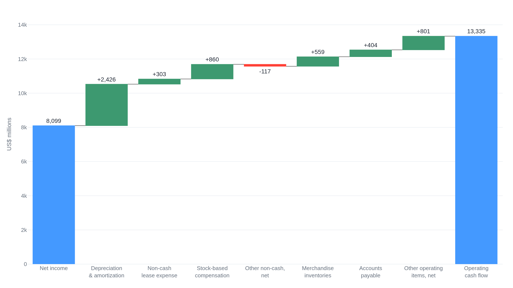

Net income is not the cash a business generates
Costco's latest annual report puts net income at $8.1 billion and cash from operations at $13.3 billion for the same year, and the walk between them is where accrual accounting parts from cash.
Why this matters
Every public company files the same three financial statements, and the first thing they teach is that a company's profit and the cash it takes in are two different numbers. Confuse them and every later judgment inherits the error: a business can report years of profit while its bank balance falls, or generate cash far above its profit and still be spending itself thin. This lesson takes one real annual report and traces its reported profit, called net income, down to the cash its operations actually produced. By the end you will be able to open any company's filing, find the same walk, and name each place where the accounting and the cash diverge. That skill is the ground every later lesson in this course stands on: you cannot compare two companies, or model one, until you can read what its statements are and are not telling you.
- 01
- SEC, Beginners' Guide to Financial Statements: the regulator's plain-language tour of the balance sheet, income statement, and cash flow statement.
- 02
- Costco Wholesale, Form 10-K (fiscal 2025): the filing this lesson reads from, with all three statements in one place.
One filing, two numbers for the same year
Costco's annual report for the year ended August 31, 2025 reports a net income of $8,099 million.1 The same filing reports that its operations produced $13,335 million of cash.2 One year, one company, two numbers that differ by more than five billion dollars. Neither is wrong. They measure different things, and learning to read a business begins with knowing which is which.
Net income is the profit a company reports: its revenue for the period minus the costs matched against that revenue. Cash from operations is the cash its day-to-day business actually took in and paid out over the same period. A public company presents both, along with a third view, in three statements that are meant to be read together. The income statement shows profit over a stretch of time. The balance sheet is a snapshot, on the last day of that stretch, of what the company owns and owes. The cash flow statement tracks the cash that moved and sorts it into operating, investing, and financing activity.3 The three sit together in the financial-statements section of every 10-K, the annual report public companies file with the regulator.4
The link that turns them into one system is small and exact. The top line of the cash flow statement's operating section is net income, the very figure the income statement ends on. Everything below it adjusts that profit, line by line, until it becomes cash from operations.
What net income counts, and what it skips
Net income is built on accrual accounting: the rule that revenue is recorded when it is earned and costs when they are incurred, regardless of when cash changes hands. A sale is booked when the company delivers what it promised, not when the customer pays.3
A small case shows why that pulls profit away from cash. Suppose a store buys an item for $60 in cash in June and sells it for $100 on credit in August, collecting the $100 the following September. Its accrual profit on that item is $40, and all of it lands in the August period: $100 of revenue, $60 of matched cost. Yet no cash arrived in August, and the $60 left the business back in June. Profit and cash not only differ in size; they land in different periods. That gap is not an error to correct. It is what accrual accounting is for, and it is why a separate cash statement has to exist.
Costco's real figures show the same accrual profit at scale. In fiscal 2025 it recorded $275,235 million of total revenue, subtracted $239,886 million of merchandise costs and $24,966 million of selling, general, and administrative expense, and after taxes reported the $8,099 million of net income.1 Every one of those figures follows the earned-not-paid rule, so none of them is a cash number.
Costco also shows the timing running the other way, toward cash before revenue. It collects membership fees in a lump at sign-up but earns them only as the year of membership elapses, so the unearned part is a liability, not yet revenue. On the balance sheet that liability, labeled deferred membership fees, stood at $2,854 million at year end.5 That is $2.9 billion of members' cash already in hand that the income statement has not yet counted as revenue. Revenue can trail cash as easily as it can lead it, and only the cash flow statement keeps score of the difference.
Walking net income to cash, one line at a time
The operating section rebuilds cash from profit by the indirect method: start at net income, then reverse every item that changed the profit without moving cash, and adjust for the cash tied up in or released from day-to-day operations. The cash-flow standard (ASC 230) lays out this form, and Costco's statement follows it exactly. Here is the whole walk, in the filing's own order and figures.2
Start with net income, $8,099 million. Add back depreciation and amortization, $2,426 million. Depreciation spreads the cost of a long-lived asset, a warehouse or a forklift, across the years it is used; amortization does the same for intangible assets. The expense this year is real on the income statement but paid no cash this year, so it goes back. The running total is $10,525 million. Add non-cash lease expense of $303 million and stock-based compensation of $860 million, the value of pay settled in shares rather than cash, both expenses that cost no cash this period. The total reaches $11,688 million.
Now a line that runs the other way. Impairment and other non-cash items, net, was negative $117 million this year, a net non-cash gain embedded in profit, so it is subtracted rather than added. The rule is to reverse non-cash items, not to add them, and reversing a gain means taking it out.6 The total falls to $11,571 million. Then the changes in working capital, the cash tied up in inventories and in what the company owes and is owed: merchandise inventories released $559 million as stock fell, accounts payable added $404 million, and other operating items added $801 million. Those three carry the total to $13,335 million, which is cash from operations.

One limit rides with this number. Cash from operations is measured before the business spends anything on the stores and equipment that keep it running.
The cash the income statement never shows
The largest step in the walk was depreciation and amortization, $2,426 million added back. Depreciation is not this year's cash outlay; it is the spread-out cost of purchases made in earlier years. This year's actual cash outlay on new property and equipment, called capital expenditure or capex, was $5,498 million, more than double the depreciation, and it sits in the investing section, below cash from operations.2 So the income statement charged $2,426 million of wear while the business spent $5,498 million of cash the income statement never records at all.
That divergence has a consequence: cash from operations of $13,335 million overstates the cash truly left for owners. Subtract the $5,498 million of capex the business needed just to keep going and to grow, and the cash it generated after reinvestment is $7,837 million, which is below its $8,099 million of net income.6 A number larger than profit and a number smaller than profit describe the same year; which one is honest depends on the question being asked. The table sets the four figures side by side.
| Measure | Value | What it is |
|---|---|---|
| Net income | 8 099 | Accrual profit: revenue less matched costs. |
| D&A charged | 2 426 | Non-cash wear expensed this year on past purchases. |
| Capex paid | 5 498 | Actual cash spent this year on property and equipment. |
| Cash from ops | 13 335 | Cash the business took in before reinvestment. |
| Ops less capex | 7 837 | Cash left after the spending needed to keep running. |
Working capital is the other place profit and cash come apart, and it swings hard from year to year. In fiscal 2025 falling inventories released $559 million of cash. A year earlier the same line ran the opposite way: Costco built inventory and it consumed $2,068 million, while slower payment to suppliers, a rise in accounts payable, put $1,938 million back.2 The business earned a profit in both years. Whether its own operations fed cash or drank it turned on inventory and payment timing, not on the profit at all.
One caution before generalizing from this company. Costco sells for cash and card and carries almost no customer debts, so the classic case, revenue booked on credit while the cash lags in accounts receivable, barely appears here. In a business that sells on credit, net income can run well ahead of cash for exactly that reason. Costco is a clean teacher because it is unusual, not because it is typical.
The takeaway
Net income and cash from operations are different numbers, and the difference has a small set of names. Reverse the non-cash items that touched profit but not cash, adding depreciation and stock-based pay back and taking net non-cash gains out. Adjust for the working capital that day-to-day operations tie up or release. What remains is cash from operations, and the operating section of the cash flow statement is that reconciliation, printed in full in every 10-K. Read it once more against the capital spending below it: cash from operations flags the cash before reinvestment, and the real spending on property and equipment can be double the depreciation the income statement showed, so the cash actually left over can sit below the reported profit. You can now open a filing, start at net income, and walk it to cash line by line, naming each place accrual accounting and cash part. That is the reading the next lesson will put to work, setting one company's walk beside another's.
- 01
- Aswath Damodaran, Earnings and Cash Flows: A Primer on Free Cash Flows: how analysts adjust net income toward cash, and where the shortcuts mislead.
- 02
- Warren Buffett, 1986 Chairman's Letter (owner-earnings appendix): the case for measuring earnings net of the capital a business must keep spending to stand still.
Sources
- SEC EDGAR · Costco Wholesale Corp., Form 10-K (FY2025), Consolidated Statements of Income
- SEC EDGAR · Costco Wholesale Corp., Form 10-K (FY2025, accession 0000909832-25-000101), Consolidated Statements of Cash Flows
- U.S. Securities and Exchange Commission · Beginners' Guide to Financial Statements
- U.S. Securities and Exchange Commission · How to Read a 10-K/10-Q
- SEC EDGAR · Costco Wholesale Corp., Form 10-K (FY2025), Consolidated Balance Sheets
- Aswath Damodaran (NYU Stern) · Earnings and Cash Flows: A Primer on Free Cash Flows